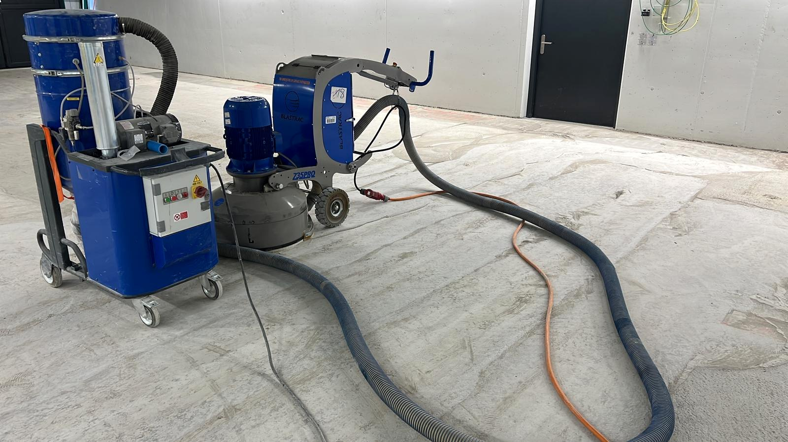

Referenzprojekt
Boden schleifen
Schleifen einer Betonfläche in einer Gewerbefläche mit Maschinen und Absaugung. Die Fläche wurde für die weiteren Aufbau- oder Beschichtungsarbeiten vorbereitet.
Offerte anfordern
Bodenschleifen und Vorbereitung
Die vorhandene Betonfläche wurde maschinell geschliffen und gleichmässig bearbeitet. Ziel war eine saubere, glatte Oberfläche als hochwertige Grundlage für die weiteren Arbeiten.
- Maschinelles Schleifen der Bodenfläche
- Absaugung für eine saubere Arbeitsumgebung
- Herstellung einer sauberen und glatten Oberfläche
- Saubere Übergabe an Bauherrschaft und Folgegewerke